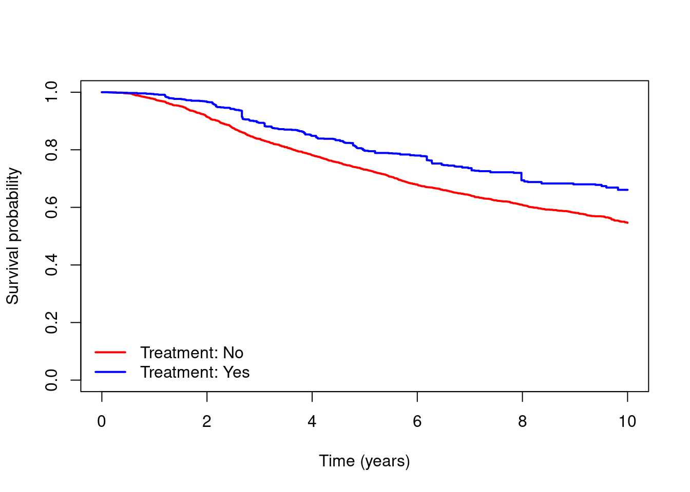
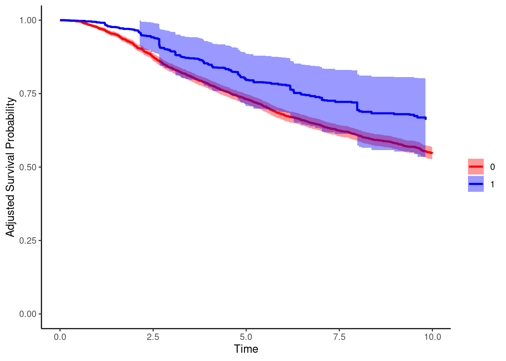

library(survival)
library(adjustedCurves)
library(riskRegression)
dta = readRDS(file = "data/dta.rds")
dta$hormon = as.factor(dta$hormon)Weighting and standardisation for point treatments
Data
In this practical we will use the ‘rotterdam’ data set, which includes data on individuals who underwent surgery for primary breast cancer between 1978 and 1993, and whose data were recorded in the Rotterdam Tumour Bank. The data include information on treatments received alongside a number of individual characteristics. Individuals were followed up for disease recurrence and death for up to a maximum of 19.3 years. This data set is available as part of the ‘survival’ package in R, and it has been widely used to illustrate survival analysis methods [e.g. see Royston P, Altman D. External validation of a Cox prognostic model: principles and methods. BMC Medical Research Methodology 2013, 13:33].
We have provided a slightly modified version of the Rotterdam data set in which individual follow-up is recorded in years instead of days, and where we have applied censoring at 10 years. We have also created an additional variable ‘enodes’ which is a transformation of the nodes variable - this transformation has been used in several previous analyses of these data. Some individuals in the original data set have been excluded, as they had recorded death times after they were censored for recurrence, resulting in a final sample size of 2939 individuals.

Aims
The aim is to estimate the effect of hormone therapy use on survival up to 10 years. More specifically we will estimate the population average (marginal) survival curves if everyone had received hormone therapy (hormon = 1) and if everyone had not received hormone therapy (hormon = 0). This will be done using the IPTW approach and the standardisation (g-formula) approach.
Load data and packages
Simple analyses
- Obtain and plot Kaplan-Meier estimates of the survival curves for people who did and did not receive hormone therapy. Which group had better survival?
km = survfit(Surv(dtime,death)~hormon,data=dta)
plot(km, xlab="Time (years)",ylab="Survival probability",
col=c("red","blue"),lwd=2,conf.int=T,main="")
legend(x="bottomleft",c("Treatment: No","Treatment: Yes"),
col=c("red","blue"),lty=1,lwd=2,bty="n")
- Using
coxph, fit the following Cox regression models: (a) an unadjusted model including ‘hormon’ only, (b) an adjusted model including ‘hormon’ and the following potential confounders: age, meno, size, grade, enodes, pgr, er, chemo. Compare the estimated hazard ratios for ‘hormon’ in the unadjusted and adjusted models.
cox.unadj = coxph(Surv(dtime,death)~hormon,data=dta)
summary(cox.unadj)Call:
coxph(formula = Surv(dtime, death) ~ hormon, data = dta)
n= 2939, number of events= 1139
coef exp(coef) se(coef) z Pr(>|z|)
hormon1 0.41649 1.51662 0.08748 4.761 1.93e-06 ***
---
Signif. codes: 0 '***' 0.001 '**' 0.01 '*' 0.05 '.' 0.1 ' ' 1
exp(coef) exp(-coef) lower .95 upper .95
hormon1 1.517 0.6594 1.278 1.8
Concordance= 0.52 (se = 0.005 )
Likelihood ratio test= 20.5 on 1 df, p=6e-06
Wald test = 22.67 on 1 df, p=2e-06
Score (logrank) test = 22.99 on 1 df, p=2e-06cox.adj = coxph(Surv(dtime,death)~hormon+age+meno+size+as.factor(grade)+enodes+
pgr+er+chemo,data=dta)
summary(cox.adj)Call:
coxph(formula = Surv(dtime, death) ~ hormon + age + meno + size +
as.factor(grade) + enodes + pgr + er + chemo, data = dta)
n= 2939, number of events= 1139
coef exp(coef) se(coef) z Pr(>|z|)
hormon1 -0.2455480 0.7822757 0.0926336 -2.651 0.00803 **
age 0.0088660 1.0089054 0.0040484 2.190 0.02852 *
meno 0.0414142 1.0422837 0.1060775 0.390 0.69623
size20-50 0.3944697 1.4835973 0.0705760 5.589 2.28e-08 ***
size>50 0.6695558 1.9533695 0.0983801 6.806 1.00e-11 ***
as.factor(grade)3 0.3225828 1.3806893 0.0762842 4.229 2.35e-05 ***
enodes -1.8736260 0.1535658 0.1098238 -17.060 < 2e-16 ***
pgr -0.0005765 0.9994236 0.0001445 -3.989 6.64e-05 ***
er -0.0001394 0.9998606 0.0001226 -1.137 0.25555
chemo -0.0993596 0.9054171 0.0861474 -1.153 0.24876
---
Signif. codes: 0 '***' 0.001 '**' 0.01 '*' 0.05 '.' 0.1 ' ' 1
exp(coef) exp(-coef) lower .95 upper .95
hormon1 0.7823 1.2783 0.6524 0.9380
age 1.0089 0.9912 1.0009 1.0169
meno 1.0423 0.9594 0.8466 1.2832
size20-50 1.4836 0.6740 1.2919 1.7037
size>50 1.9534 0.5119 1.6108 2.3688
as.factor(grade)3 1.3807 0.7243 1.1889 1.6034
enodes 0.1536 6.5119 0.1238 0.1904
pgr 0.9994 1.0006 0.9991 0.9997
er 0.9999 1.0001 0.9996 1.0001
chemo 0.9054 1.1045 0.7648 1.0720
Concordance= 0.707 (se = 0.008 )
Likelihood ratio test= 600.7 on 10 df, p=<2e-16
Wald test = 651 on 10 df, p=<2e-16
Score (logrank) test = 743.1 on 10 df, p=<2e-16Estimating marginal survival curves using IPTW
- We will start by estimating the weights.
- Fit a logistic regression model for treatment (
hormon) conditional on the potential confounders, using the same set of variables as used in the adjusted Cox model in Part A, question 2. - Use the previous model to obtain estimated inverse probability of treatment weights \[ W=\frac{A}{\mathbb{P}(A=1|L)}+\frac{(1-A)}{\mathbb{P}(A=0|L)}. \] Take a look at the distribution of the weights.
#Fit the model for treatment
mod.treat = glm(hormon~age+meno+size+as.factor(grade)+enodes+pgr+er+chemo,
data=dta,family="binomial")
summary(mod.treat)
Call:
glm(formula = hormon ~ age + meno + size + as.factor(grade) +
enodes + pgr + er + chemo, family = "binomial", data = dta)
Deviance Residuals:
Min 1Q Median 3Q Max
-1.4883 -0.4587 -0.3185 -0.1828 3.0234
Coefficients:
Estimate Std. Error z value Pr(>|z|)
(Intercept) -1.6858529 0.4768463 -3.535 0.000407 ***
age 0.0108156 0.0080866 1.337 0.181072
meno 1.3907115 0.2484181 5.598 2.17e-08 ***
size20-50 0.0713970 0.1487264 0.480 0.631188
size>50 -0.0657177 0.2106971 -0.312 0.755112
as.factor(grade)3 0.3358180 0.1658193 2.025 0.042846 *
enodes -2.9076117 0.2306816 -12.604 < 2e-16 ***
pgr -0.0003873 0.0003010 -1.286 0.198296
er -0.0004711 0.0002733 -1.724 0.084717 .
chemo -0.6691812 0.2410921 -2.776 0.005510 **
---
Signif. codes: 0 '***' 0.001 '**' 0.01 '*' 0.05 '.' 0.1 ' ' 1
(Dispersion parameter for binomial family taken to be 1)
Null deviance: 2081.2 on 2938 degrees of freedom
Residual deviance: 1672.5 on 2929 degrees of freedom
AIC: 1692.5
Number of Fisher Scoring iterations: 6#predicted probability of treatment from the model for each individual
pred.treat = predict(mod.treat,data=dta,type="response")
#Obtain the weight for each person
dta$wt = (dta$hormon==1)/pred.treat+(dta$hormon==0)/(1-pred.treat)
#take a look at the distribution of the weights
hist(dta$wt,breaks=50)
- Obtain estimates of the marginal survival curves under the two treatment strategies using a weighted Kaplan-Meier analysis (using
survfitwith the weights option), and plot these.
#Weighted Kaplan-Meier analysis
km.wt = survfit(Surv(dtime,death)~hormon,data=dta,weights=dta$wt)
#plot the estimated marginal survival curves
plot(km.wt, xlab="Time (years)",ylab="Survival probability",
col=c("red","blue"),lwd=2,conf.int=F,main="")
legend(x="bottomleft",c("Treatment: No","Treatment: Yes"),
col=c("red","blue"),lty=1,lwd=2,bty="n")
- Fit a weighted Cox regression (using
coxphwith the weights option) including ‘hormon’ only in the model. Use the results from the model to obtain estimates of the marginal survival curves under the two treatment strategies (usingsurvfit), and plot your estimated curves.
#Using Weighted Cox regression
cox.wt = coxph(Surv(dtime,death)~hormon,data=dta,weights=dta$wt)
summary(cox.wt)Call:
coxph(formula = Surv(dtime, death) ~ hormon, data = dta, weights = dta$wt)
n= 2939, number of events= 1139
coef exp(coef) se(coef) robust se z Pr(>|z|)
hormon1 -0.38362 0.68139 0.04537 0.17176 -2.233 0.0255 *
---
Signif. codes: 0 '***' 0.001 '**' 0.01 '*' 0.05 '.' 0.1 ' ' 1
exp(coef) exp(-coef) lower .95 upper .95
hormon1 0.6814 1.468 0.4866 0.9541
Concordance= 0.549 (se = 0.021 )
Likelihood ratio test= 72.81 on 1 df, p=<2e-16
Wald test = 4.99 on 1 df, p=0.03
Score (logrank) test = 72.38 on 1 df, p=<2e-16, Robust = 5.7 p=0.02
(Note: the likelihood ratio and score tests assume independence of
observations within a cluster, the Wald and robust score tests do not).#plot estimated marginal survival curves
# censor = F means: include only event time points
surv.1 = survfit(cox.wt,newdata=data.frame(hormon=factor(1)),censor = F)$surv
surv.0 = survfit(cox.wt,newdata=data.frame(hormon=factor(0)),censor = F)$surv
times = sort(unique(dta$dtime[dta$death==1]))
plot(times,surv.1,type="s",col="blue",lwd=2,ylim=c(0,1),
xlab="Time (years)",ylab="Survival probability")
lines(times,surv.0,type="s",col="red",lwd=2)
legend(x="bottomleft",c("Treatment: No","Treatment: Yes"),
col=c("red","blue"),lwd=2,bty="n")
- Based on your Kaplan-Meier and Cox regression analyses in questions 2 and 3, obtain estimates of the marginal risk of death up to time 5 under the two treatment strategies, and the corresponding risk difference.
#---
#Using Weighted Kaplan-Meier
summary(km.wt,times=5)Call: survfit(formula = Surv(dtime, death) ~ hormon, data = dta, weights = dta$wt)
hormon=0
time n.risk n.event survival std.err lower 95% CI
5.00e+00 2.05e+03 7.83e+02 7.31e-01 9.26e-03 7.13e-01
upper 95% CI
7.50e-01
hormon=1
time n.risk n.event survival std.err lower 95% CI
5.00e+00 2.12e+03 5.73e+02 7.97e-01 3.26e-02 7.35e-01
upper 95% CI
8.63e-01 1-summary(km.wt,times=5)$surv[1] 0.2688313 0.2034598#Risk difference
(1-summary(km.wt,times=5)$surv[2])-(1-summary(km.wt,times=5)$surv[1])[1] -0.06537144#---
#Using Weighted Cox regression
surv.1.t5 = summary(survfit(cox.wt,newdata=data.frame(hormon=factor(1)),censor = F),times=5)
surv.0.t5 = summary(survfit(cox.wt,newdata=data.frame(hormon=factor(0)),censor = F),times=5)
#Risk difference
(1-surv.1.t5$surv)-(1-surv.0.t5$surv)[1] -0.07827857- EXTRA: Use the
adjustedsurvfunction in theadjustedCurvespackage to obtain the marginal survival curves and the marginal risks and risk differences at time 5. Use the optionmethod=iptw_km.
#marginal survival curves
adjsurv.wt = adjustedsurv(data=dta,variable="hormon",ev_time="dtime",event="death",
method="iptw_km",
treatment_model=mod.treat,
conf_int=TRUE,
bootstrap=F)
plot(adjsurv.wt,conf_int=T,custom_colors=c("red","blue"),xlab="Time",legend.title="",ylim=c(0,1))Loading required namespace: pammtools
#survival probabilities at time 5
adjsurv.wt = adjustedsurv(data=dta,variable="hormon",ev_time="dtime",event="death",
method="iptw_km",
treatment_model=mod.treat,
times=5,
conf_int=TRUE,
bootstrap=F)
adjsurv.wt$adjsurv time surv group se ci_lower ci_upper
1 5 0.7311687 0 0.008781155 0.713958 0.7483795
2 5 0.7965402 1 0.045380018 0.707597 0.8854834Estimating marginal survival curves using standardisation (g-formula)
Start by fitting an adjusted Cox regression including both treatment (`hormon’) and the set of potential confounders, as in Part A, question 2.
We will now perform the standardisation based on the adjusted Cox model.
- Create a new data set which is the same as
dtabut where you sethormon=1for everyone. Their other variables remain the same. Call thisdta.1. - Using the Cox model from question 1, use
survfitto obtain the estimated survival probability for each individual indta.1at all observed event or censoring times times. This gives a matrix of estimated survival probabilities for each individual at each time under the treatment strategy of settinghormon=1. - Calculate the average survival probability at each time, i.e. averaging over individuals at each time.
#create dataset in which treatment is set to 1 for everyone
dta.1 = dta
dta.1$hormon = 1
dta.1$hormon = as.factor(dta.1$hormon)
#predicted survival probabilities at all observed event times
# for each individual under strategy hormon=1
surv.1 = survfit(cox.adj,newdata=dta.1,censor = F)
#mean survival probability at all times
#averaging over all individuals under strategy hormon=1
survmean.1 = rowMeans(surv.1$surv)- Repeat question 2 but setting
hormon=0for everyone.
#create dataset in which treatment is set to 0 for everyone
dta.0 = dta
dta.0$hormon = 0
dta.0$hormon = as.factor(dta.0$hormon)
#predicted survival probabilities at all observed event times
# for each individual under strategy hormon=0
surv.0 = survfit(cox.adj,newdata=dta.0,censor = F)
#mean survival probability at all times
#averaging over all individuals under strategy hormon=0
survmean.0 = rowMeans(surv.0$surv)- Plot the marginal survival curves using your results from questions 2 and 3.
times = surv.1$time
plot(times,survmean.1,type="s",col="blue",lwd=2,ylim=c(0,1),
xlab="Time (years)",ylab="Survival probability")
lines(times,survmean.0,type="s",col="red",lwd=2)
legend(x="bottomleft",c("Treatment: No","Treatment: Yes"),
col=c("red","blue"),lwd=2,bty="n")
- Obtain estimates of the marginal risk of death up to time 5 under the two treatment strategies, and the corresponding risk difference.
#predicted survival probabilities at time 5 for each individual under strategy hormon=1
surv.1.t5 = summary(surv.1,times=5)
#predicted survival probabilities at time 5 for each individual under strategy hormon=0
surv.0.t5 = summary(surv.0,times=5)
#mean survival probability at time 5, averaging over all individuals
#under strategy hormon=1 and under strategy hormon=0
survmean.1.t5 = mean(surv.1.t5$surv)
survmean.0.t5 = mean(surv.0.t5$surv)
#Risk difference at time 5
rd.t5 = survmean.1.t5-survmean.0.t5- Use the
adjustedsurvfunction in the ‘adjustedCurves’ package to obtain the marginal survival curves and the marginal risks and risk differences. Use the optionmethod=direct.
#marginal survival curves
#We need to use the 'x=TRUE' option in coxph
cox.adj = coxph(Surv(dtime,death)~hormon+age+meno+size+as.factor(grade)+enodes+
pgr+er+chemo,data=dta,x=TRUE)
adjsurv.gform = adjustedsurv(data=dta,variable="hormon",ev_time="dtime",event="death",
method="direct",
outcome_model=cox.adj,
conf_int=TRUE,
bootstrap=F)
plot(adjsurv.gform,conf_int=T,custom_colors=c("red","blue"),
xlab="Time (years)",legend.title="",ylim=c(0,1))
#survival and risk difference probabilities at time 5
adjsurv = adjustedsurv(data=dta,variable="hormon",ev_time="dtime",event="death",
method="direct",
outcome_model=cox.adj,
conf_int=TRUE,
bootstrap=F,
times=5)
#risk diff at time 5
adjsurv$ate_object$diffRisk estimator time A estimate.A B estimate.B estimate se
<char> <num> <char> <num> <char> <num> <num> <num>
1: GFORMULA 5 0 0.2670785 1 0.2204934 -0.04658518 0.01568172
lower upper p.value
<num> <num> <num>
1: -0.07732079 -0.01584957 0.002971533